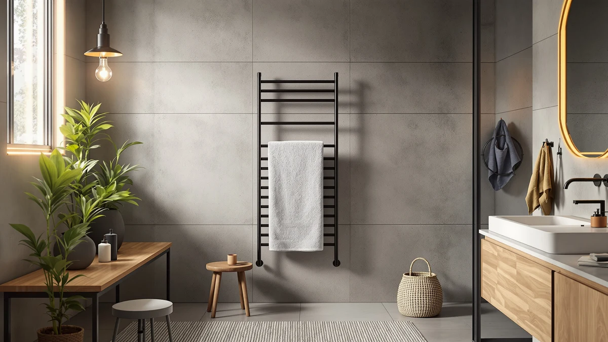

Best Towel Warmer with Aromatherapy (2026)
Prices and picks verified as of August 2026. Independent, reader-supported reviews.


Quick Answer
No single rack in this comparison builds scent into its heating element, so the best towel warmer with aromatherapy is a pairing: the VIPBATH fragrance discs for scent, clipped onto one of six freestanding or wall-mount racks for heat. Prices for the racks alone range from $64.25 to $179.99, and the discs add $9.01 on top.
Our pick: VIPBATH Towel Warmer Fragrance Discs — $9.01 Check Price on Amazon
Bottom line: our top pick is the VIPBATH Towel Warmer Fragrance Discs at $9.01. The best budget option is the Pursonic TW300 Towel Warmer Rack for Bathroom at $64.25.
Things to Know Before You Buy
- Aromatherapy comes from one accessory, not the racks themselves. The VIPBATH discs supply the scent, with 12 discs and 2 magnetic holders across three fragrances; the six racks below heat towels on their own and nothing more.
- The magnetic holders attach to metal surfaces. Per the listing, they clip inside towel warmers, closets, or other metal spaces, which is why they work across every bar-style rack in this comparison rather than one specific brand.
- Temperature ranges vary a lot between racks. The Sawlece pair reaches 110°F to 170°F in about 10 minutes, the R FLORY tops out at 140°F over app-set timers, and the Pursonic and INNOKA sit lower and slower.
- Installation style differs by rack. Some install wall-mounted only, some freestanding only, and a few, like the Poloma and INNOKA, let you choose either.
- Prices split into two clear tiers. The fragrance-disc accessory costs about $9, while the racks that actually heat towels run from $64.25 to $179.99.
The best towel warmer with aromatherapy pairs a scent-releasing accessory with a rack that actually heats your towels, since no single unit in this lineup builds a fragrance diffuser into its heating element. We looked at seven products sold for this exact search: one fragrance-disc set and six freestanding or wall-mount towel warmer racks that can carry it.
We compared the VIPBATH Fragrance Discs against those six racks on price, listed temperature range, and installation style, using each product's own listing rather than any hands-on time. For most bathrooms, the VIPBATH discs are the piece to buy first, at $9.01, because their magnetic holders attach to the metal bars on any of the racks below and let you build your own aromatherapy towel-warming setup around whichever one fits your space and budget.
The racks themselves range from $64.25 for the Pursonic TW300 up to $179.99 for the R FLORY 8-bar model, and each uses a different mix of heat range, bar count, and mounting style. Pick the rack for how it warms towels, then add the VIPBATH discs, or another compatible fragrance pack, for the scent.
Why You Should Trust Us
This guide is written by Ilane Tall, who covers bathroom and home-comfort gear for Best Towel Warmers. We do not run a fake testing lab: instead of claiming hands-on time with every rack and accessory, we compare manufacturer specs, listed pricing, and verified buyer reviews for each product against its closest competitors, and we say plainly when a listing is a scent accessory rather than a standalone towel warmer, since getting that distinction right is the whole point of finding a genuine towel warmer with aromatherapy.
How We Picked
We started with every towel warmer, heated rack, and warmer accessory tied to this search, then split them into two groups: the one fragrance-disc accessory that actually delivers scent, and the six freestanding or wall-mount racks that heat towels but need an add-on to become an aromatherapy setup. Within the rack group, we compared stated temperature range, bar count, installation style, and price rather than ranking a $9 accessory against a $180 rack on the same scale.
How We Compared
We don't own a bathroom test lab, and none of these products were installed for this guide. Instead we compared each listing's stated temperature range, heat-up time, bar count, and price against its closest competitors, and we noted where a product is a fragrance accessory rather than a standalone warmer so the two categories don't get mixed together in the ranking. Scent count and disc details for the VIPBATH pack came directly from its listing, since Amazon does not currently supply verified rating data for most of the products here.
Our Picks

VIPBATH Towel Warmer Fragrance Discs
What we like
- Ships in a Holiday Gift Edition box with 12 discs and 2 magnetic holders, ready to use out of the box
- 3 scents (Ocean, Mint, and Cologne) with 4 discs each, so you can rotate fragrance instead of committing to one
- Magnetic holders attach to metal surfaces inside towel warmers, closets, or other spaces per the listing, which is what makes it compatible with the racks below
Flaws but not dealbreakers
- It only supplies scent; it doesn't generate any heat of its own, so you still need one of the racks below to warm towels
- At $9.01 for 12 discs, the per-disc cost runs higher than a larger bulk refill pack would
| Material | Stainless steel |
| Size | 400 Fl Oz (Pack of 1) |
The VIPBATH Towel Warmer Fragrance Discs are the one product in this lineup that actually handles the aromatherapy side of a towel warmer with aromatherapy setup. The Holiday Gift Edition box holds 12 aroma discs split across three scents, Ocean, Mint, and Cologne, at four discs each, along with two magnetic holders built to clip onto metal.
Because those holders attach to metal surfaces inside towel warmers, closets, or other spaces according to the listing, they work with the bar-style racks below rather than one specific brand. Pair a set with the Sawlece, Poloma, Pursonic, R FLORY, or INNOKA rack, and you get a warm towel that also carries a light scent, all for $9.01 upfront.

Sawlece 5-Bar Freestanding Towel Warmer
What we like
- 180W heating system warms all five bars evenly in about 10 minutes, per the listing
- Digital display lets you dial in anywhere from 110°F to 170°F instead of a single fixed setting
- Built-in timer and auto shut-off save energy and mean you don't have to remember to switch it off
Flaws but not dealbreakers
- At $148.99, it's one of the pricier freestanding racks in this comparison
- Freestanding footprint takes up floor space that a wall-mounted rack would not
| Material | Stainless steel |
| Size | 5-Bars |
The Sawlece 5-Bar Freestanding Towel Warmer heats up faster than most of the other racks here, with a 180W system the listing says warms all five bars evenly in about 10 minutes. The digital display gives you a 110°F to 170°F range, well beyond the single fixed setting on some of the cheaper racks in this comparison, and a built-in timer with auto shut-off means you're not leaving it running by accident.
Its metal bars are the kind of surface the VIPBATH magnetic holders are built to grip, so this is a rack you can build an aromatherapy towel-warming setup around rather than shopping for one unit that tries to do both jobs. At $148.99, it costs more than the Pursonic or INNOKA below, and that premium buys a wider temperature range and quicker heat-up rather than any scent feature of its own.

Pursonic TW300 Towel Warmer Rack
What we like
- At $64.25, it's the least expensive full towel-warming rack in this lineup
- Installs two ways: mount it to the wall with the included brackets, or use the freestanding feet near any outlet
- Designed to gently remove moisture from towels, which helps prevent the mildew and odor that damp towels can develop
Flaws but not dealbreakers
- Takes about 30 minutes to reach 122°F, noticeably slower than the Sawlece's 10-minute warm-up
- No stated adjustable temperature range, so you get one target heat level instead of a dial
| Material | Stainless steel |
| Size | — |
The Pursonic TW300 is the budget entry among the full racks in this comparison, priced at $64.25 while still offering two install options. Mount it to the wall with the included brackets, or set it up freestanding near an outlet, whichever suits your bathroom layout better.
The listing says it reaches 122°F in about 30 minutes, slower than the Sawlece's quoted 10-minute warm-up, but it's built to gently remove moisture from towels so they don't sit damp long enough to develop mildew or odor. Add a set of VIPBATH discs to its bars and you've got an aromatherapy towel-warming setup for under $75 total.

Sawlece 5-Bar Freestanding Towel Warmer
What we like
- Same 180W, 5-bar system as the white Sawlece above, warming evenly in about 10 minutes per the listing
- Matte black finish for bathrooms where white hardware would stand out
- Same 110°F to 170°F adjustable range with digital display and auto shut-off
Flaws but not dealbreakers
- At $149.99, it costs a dollar more than the white version, with color the only real difference
- Same floor-space tradeoff as any freestanding rack
| Material | Stainless steel |
| Size | 5-Bars |
This is the matte black counterpart to the Sawlece above, and the spec sheet is identical: a 180W, 5-bar system that heats up in about 10 minutes, a digital display covering 110°F to 170°F, and a built-in timer with auto shut-off.
The only meaningful difference is finish. At $149.99, it costs a dollar more than the white version, so the choice between the two comes down to which color fits your bathroom rather than performance. Like its white twin, its bars work with the VIPBATH magnetic holders if you want to add scent.

Poloma Freestanding Heated Towel Racks
What we like
- Adjustable from 115°F to 155°F, per the listing, so you can dial in a lower or higher target than the fixed-temperature racks
- Works freestanding or wall-mounted, so you can change setups without buying a second rack
- Larger heating surface at 34.2 by 19.7 inches gives towels more contact area to dry evenly
Flaws but not dealbreakers
- At $135.98, it sits in the middle of this lineup's price range, cheaper than the Sawlece pair but pricier than the Pursonic
- No stated heat-up time, so you can't compare its speed directly to the Sawlece's 10-minute figure
| Material | Stainless steel |
| Size | 34.2"(L) x 19.7"(W) |
The Poloma Freestanding Heated Towel Rack covers a wider surface than most of the other racks here, at 34.2 by 19.7 inches, and the listing notes that keeping towels dry with heat helps cut down on the bacteria growth that damp, air-dried towels can develop between washes.
Its 115°F to 155°F adjustable range and dual freestanding-or-wall-mounted setup make it a flexible pick if you're not sure yet how you want it installed. At $135.98, it lands between the budget Pursonic and the pricier Sawlece pair, and its bars are wide enough to hold the VIPBATH magnetic discs without crowding a towel.

Heated Towel Racks for Bathroom
What we like
- 8 closely spaced bars cover more heating area than any other rack in this comparison
- WiFi app control adjusts temperature from 100°F to 140°F and sets timers from 1 to 24 hours remotely
- Installs freestanding or wall-mounted, with slightly different dimensions listed for each setup
Flaws but not dealbreakers
- At $179.99, it's the most expensive product in this comparison
- App-dependent control adds a setup step that the simpler dial-based racks don't require
| Material | Stainless steel |
| Size | 8 bar |
The R FLORY rack is the priciest product in this comparison at $179.99, and the spec sheet explains why: 8 closely spaced bars for a larger heating area, plus WiFi app control that adjusts temperature from 100°F to 140°F and sets timers anywhere from 1 to 24 hours without walking over to the unit.
It installs freestanding at 35.43 by 19.69 by 3.15 inches, or wall-mounted at a slightly smaller 30.71 by 19.69 by 3.15 inches, per the listing. If you want the widest bar coverage in this lineup and don't mind paying for app control, this is the rack to add your VIPBATH discs to.

INNOKA 2-in-1 Towel Warmer and
What we like
- At $78.99, it undercuts every rack here except the Pursonic
- 2-in-1 design works freestanding in a bathroom or laundry room, or wall-mounted to save floor space
- Keeps towels and robes dry and warm as you step out of the shower, per the listing
Flaws but not dealbreakers
- Heat-up time of 30 to 40 minutes is among the slowest in this comparison, similar to the Pursonic
- Its 110°F to 122°F range tops out lower than the Poloma or Sawlece racks
| Material | Stainless steel |
| Size | — |
The INNOKA 2-in-1 splits the difference between a dedicated towel warmer and a general drying rack. It works freestanding in a bathroom or laundry room, or mounts to the wall when floor space is tight, and the listing says it reaches 110°F to 122°F within 30 to 40 minutes.
At $78.99, it's the second-cheapest full rack in this comparison after the Pursonic, though its temperature ceiling sits lower than the Poloma or either Sawlece. If your priority is a flexible, budget rack rather than the fastest or hottest one, and you plan to add VIPBATH discs for scent, the INNOKA covers the basics.
Quick Comparison
| Product | Material | Price | Rating | Best for | Get it |
|---|---|---|---|---|---|
| VIPBATH Towel Warmer Fragrance Discs | Stainless steel | $9.01 | 4 | the actual aromatherapy component | View on Amazon → |
| Sawlece 5-Bar Freestanding Towel Warmer | Stainless steel | $148.99 | 4 | fastest heat-up, adjustable to 170°F | View on Amazon → |
| Pursonic TW300 Towel Warmer Rack | Stainless steel | $64.25 | 4 | cheapest full rack | View on Amazon → |
| Sawlece 5-Bar Freestanding Towel Warmer | Stainless steel | $149.99 | 4 | same as above, matte black finish | View on Amazon → |
| Poloma Freestanding Heated Towel Racks | Stainless steel | $135.98 | 4 | widest surface, flexible install | View on Amazon → |
| Heated Towel Racks for Bathroom | Stainless steel | $179.99 | 4 | most bars, WiFi app control | View on Amazon → |
| INNOKA 2-in-1 Towel Warmer and | Stainless steel | $78.99 | 4 | budget 2-in-1 rack | View on Amazon → |
What counts as a towel warmer with aromatherapy?
None of the racks in this comparison build scent into their heating element.
How much does a towel warmer with aromatherapy cost?
The VIPBATH fragrance discs that supply the scent cost $9.01.
The Competition
Seven products make up this comparison: one fragrance-disc accessory and six towel warmer racks. The search behind this list also turned up products worth ruling out before you shop.
Listings marketed as an all-in-one "aromatherapy towel warmer" without any documented scent-diffusing mechanism got left out. We only recommend a feature that's actually spelled out on the listing, and none of the racks here claim to release fragrance on their own.
Bucket-style folding warmers use a different heating method and fall into a different budget bracket than the flat-bar racks in this comparison. If that style interests you, our best budget heated towel racks guide covers those, along with more fragrance-disc options.
Among the six racks here, the choice comes down to budget and features: the Pursonic TW300 is the cheapest way in, the Sawlece pair offers the fastest heat-up and the widest adjustable range, and the R FLORY tops the lineup with WiFi control and the most bars. Whichever rack you pick, the VIPBATH discs remain the piece that actually turns it into the best towel warmer with aromatherapy you can build from products that exist today.
Frequently Asked Questions
What counts as a towel warmer with aromatherapy?
None of the racks in this comparison build scent into their heating element. The aromatherapy comes from a separate accessory, like the VIPBATH fragrance discs, which attach with magnetic holders to the metal bars of a rack that heats towels on its own.
How much does a towel warmer with aromatherapy cost?
The VIPBATH fragrance discs that supply the scent cost $9.01. The racks that heat towels range from $64.25 for the Pursonic TW300 up to $179.99 for the R FLORY 8-bar rack, so a full aromatherapy towel-warming setup runs somewhere between about $73 and $189 depending on which rack you pair the discs with.
Can I use the VIPBATH fragrance discs with any towel warmer rack?
The listing says the magnetic holders attach to metal surfaces inside towel warmers, closets, or other spaces, which covers the metal-bar racks in this comparison, including the Sawlece, Poloma, Pursonic, R FLORY, and INNOKA. They are not limited to one specific brand.